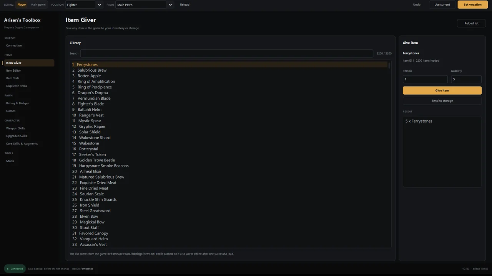

Dragon's Dogma 2 item editor and item giver
Search the game's item library, give items to the Arisen or storage, edit gear stats and hidden effects, and duplicate a stack. All edits target the save you have loaded.
What the item tools cover
| Tool | What it changes |
|---|---|
| Item Giver | Gives any item from the game's library to the inventory or storage, in a chosen quantity. Recent gifts are kept for repeat use. |
| Item Editor | Weapon-skill slots, appraisal values, element and element percentage, and a custom item name. |
| Item Stats | Enhancement level and types, base attack, magick, defence and weight, plus special-effect IDs and values. |
| Duplicate Items | Copies an inventory entry or doubles a stack, optionally carrying skills, enhancement and appraisal. |
How to give an item in Dragon's Dogma 2
- Load a save and connect Arisen's Toolbox.
- Open Item Giver and search by item name or ID.
- Select the item, set the quantity, and choose Give Item or Send to storage.
- Check the in-game inventory. The app backs up the save before the first change of the session.
Editing gear and hidden effects
The Item Editor can change an item's weapon skills and appraisal, add an element, or rename it. Item Stats exposes the enhancement levels and the special-effect fields used by rings. Changing a shared base stat affects every copy of that item type, so change one thing at a time and test in game.
Item IDs and the cached library
The item list comes from the game's items.txt and is cached after one
successful load. That keeps search usable offline. If a new title update adds items, reload
the list once with the game running so the cache is rebuilt.
Related guides
Skill editor · Cheat Engine table · Install and troubleshooting · FAQ
